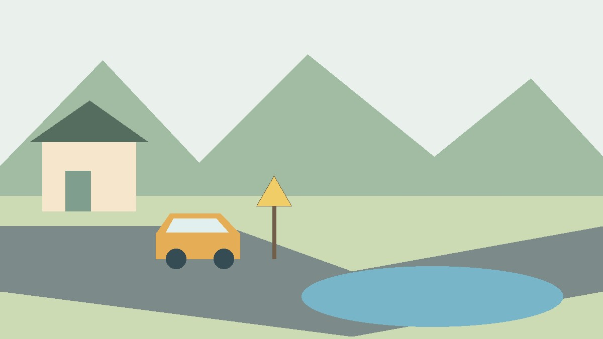
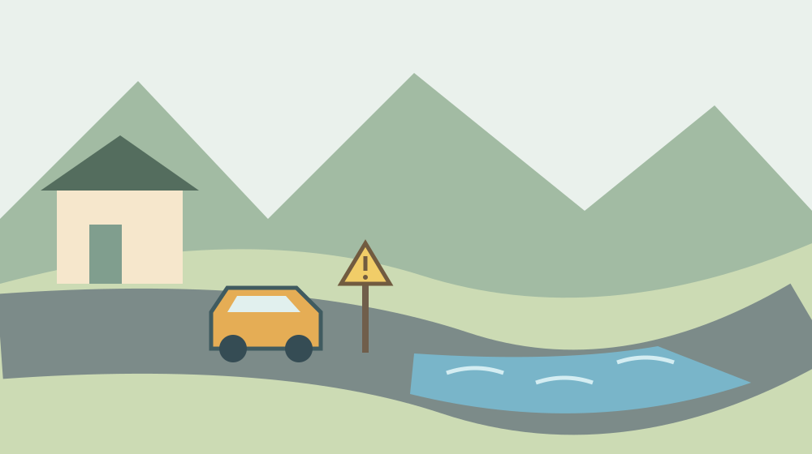

森町で冠水した道路は通れる？車の避難判断
· 地区めぐり

Q. 森町で道路が冠水していたら、浅そうでも車で通れる？
A. 冠水した道路へ車で入らないでください。森町は30センチメートル程度の浸水でも走れなくなる場合があると案内しています。この数字は安全な通行限界ではありません。浸水のおそれがあるときは車移動を控え、平時から経路と家族への連絡方法を確認してください。
送迎を支える人ほど、出発前の判断が要る
森町で家族の送迎や通勤を引き受けている方は、日々の予定を車でつないでいます。仕事を切り上げて迎えに行く人、離れて暮らす親の通院を助ける人がいる。その負担を知れば、大雨だから一律に予定を止めればよい、と簡単には言えません。
ただ、冠水した道路へ入ってよい理由にはなりません。私、大石浩之（磐田市／不動産業）は、車で行ける距離よりも、行くのをやめた日に家族が困らない段取りを先に考えます。迎えに行く人の安全も、迎えを待つ人の安全と同じように扱いたいからです。
本稿は、2026年10月30日に確認した森町の案内をもとに、平時の準備を整理したものです。いま町内のどの道が冠水しているか、どの経路なら通れるかを案内する記事ではありません。出発直前は町や道路管理者などの最新情報を確認してください。
森町が示す車移動への注意
森町の「レベル5大雨特別警報が発表されたときにとるべき行動及び車運転の注意点について」は、2026年8月31日更新の案内です。浸水のおそれがあるときは車での移動を控え、冠水した道路へ入らないよう呼びかけています。
同じ案内は、冠水した道路、低い土地、地下道、道路の下をくぐるアンダーパスを避けるよう示しています。車で進めなくなるだけでなく、流されることや、ドア・窓が開かなくなることも挙げています。乗ったまま待てば必ず安全という説明ではありません。
町はレベル5になってから避難を始めず、レベル4「避難指示」までに危険な場所から全員避難するよう案内しています。レベル5では安全な移動がすでに難しい場合があるためです。警報の名称にレベル5とあっても、準備を始める時期まで待たせる内容ではありません。
私は、送迎の約束を決めるときに「通常なら何時に出るか」と「危険が見込まれる日はどう変更するか」を分けると考えます。車を出す予定しかないと、雨が強くなってからの選択が狭くなります。今日、家族と一つだけ、取りやめた場合の連絡先を確認できます。
30センチメートルは通ってよい水深ではない
森町の案内には、30センチメートル程度の浸水でも車が走れなくなる場合があると記載されています。この数字は、そこまで走れるという許可ではありません。30センチメートル未満なら通れる、と読み替えないことが本稿の結論です。
普段の運転ではタイヤや車高を目で見ています。その感覚で「この程度なら」と判断したくなるかもしれません。しかし、町が示す数字は車の運行不能につながる危険の説明です。特定の車種について、実際の水深や流れを確認した安全判定ではありません。
私は、家族の連絡用メモにも「30センチまで可」とは書きません。数字だけが切り取られて伝わると、危険を避ける情報が、進むための根拠に変わってしまうからです。メモの先頭は「冠水した道路に入らない」とし、数字には必ず注意の文を添えます。
水深を測るために車を進めたり、家族を降ろして確かめさせたりする段取りも取りません。この記事で水の深さの見積もり方や、冠水路を走る速度は扱いません。目的地への到着時刻を守ることより、危険な道路を使わずに済む予定を作ることが先です。

ハザードマップは家の点と経路の線を見る
森町の「森町防災ハザードマップ」は、土砂災害の危険箇所、河川氾濫区域、避難所などの位置を確認する資料です。2025年4月1日更新のページには町全図に加え、三倉、天方、森、一宮、園田、飯田の地区別資料があります。
地図を開いたら、私は自宅だけでなく、学校、勤務先、家族の待機候補を探すところから始めます。住所の点を見つけた後、ふだん使う道を線としてたどる。家の周辺と移動の途中を別々に見るためです。地図上の経路は候補であり、当日の安全を保証するものではありません。
太田川周辺の住まいを調べるときは、ハザードマップで実家の床の高さを見る記事も手がかりになります。家がどの想定に入るかを調べることと、その日その道を使えるかを確認することは、別の作業です。
地区名だけで「ここは大丈夫」と家族に伝えるのは避けます。山側へ向かう道でも、自宅から目的地までの途中を確認する必要があります。逆に、地図で色が付いた範囲を見て、個々の家が直ちに住めないと決めることもしません。資料の目的を分けて読む姿勢が要ります。
良い点：移動をやめる理由を共有できる
森町の案内の良い点は、車の移動を控える条件と、避ける場所を具体的に示していることです。私は、家族で同じ公式ページを読めることに実用性を感じます。運転する人の勘だけに頼らず、予定を変更する説明に共通の根拠を持てるからです。
送迎を断る言葉は、ときに冷たく聞こえます。「迎えに行きたくない」ではなく、「浸水のおそれがあり車を使わない判断をしている」と説明できれば、話の焦点が変わります。家族の誰かを責める代わりに、待つ場所と連絡方法を確認する会話へ移せます。
地区ごとの地図を選べる点も、暮らしの準備に役立ちます。私は広い町の情報を一度で覚えるより、自分たちの生活圏を一つずつ確かめる方が続くと考えます。まず自宅と通勤先を載せた範囲を開き、家族が同じ場所を指せる状態にしておきたいところです。
家族の中に紙の方が読みやすい人がいれば、確認した範囲を紙でも共有する方法があります。スマートフォンの操作が得意な人だけが情報を持つ形にしないためです。保存した資料には確認日を書き、実際の大雨では最新の情報を別に見ると伝えておきます。
注文したい点：一般の注意を各家庭の予定につなぐ
冠水時の一般的な注意だけでは、各家庭の送迎を何時に変更するかまでは決まりません。私は、町の案内を読んだ後に家族で書き込める余地が必要だと考えます。車を使わないと決めても、待つ場所と連絡相手が空欄では、不安で出発してしまう人が出るからです。
一事業者として望むのは、注意事項と日々の予定をつなぐ案内です。ただ、すべての道路の状態を一つの紙で説明することはできません。今日できる一歩は、家族自身が「誰が迎えに行く予定か」「中止の連絡は誰へ入れるか」を書き出すことです。
代わりの道が一つあれば安心、とも言い切れません。別の道でも同じ低い場所を通るなら、代替として成り立たない場合があります。私は経路の本数を増やすより、移動自体を取りやめたときに安全をどう確かめるかまで相談したいと考えます。
三倉・天方などで生活圏を考える際の見方は、距離より移動の代替を考える記事に整理しています。本稿では、特定の地区の道を危険と断定していません。自分たちが使う経路について、現在の通行情報と地図を確認する必要があります。
対案・結論：晴れた日に一つの移動を点検する
冠水道路を避ける準備は、毎日の移動を一つ選ぶところから始められます。私は、明日の通勤か家族の送迎のどちらかに絞り、出発地、目的地、いつも通る道を紙に書く方法を勧めます。一度に全員分を完成させるより、続けやすい単位に分けます。
次に、町のハザードマップでその移動の範囲を開きます。自宅だけを見て終えず、目的地までの途中をたどります。低い場所や道路の下をくぐる箇所がどこにあるか、平時に分かる範囲で確かめます。大雨の最中に現地を見に行く確認ではありません。
地図で判断できない所は、分からないまま印を付けておきます。平時に道路管理者などへ確認するための疑問として残すためです。「この道路はいつも通れるか」ではなく、どの場所について何を知りたいのかを示せると、確認先も探しやすくなります。
移動を始める前には、最新の気象情報、町の避難情報、道路の通行情報を確認します。情報を見た時刻も家族に伝えます。朝に見た画面を夕方もそのまま根拠にしないためです。予定が変わったら、目的地へ出発したかどうかも連絡に含めます。
危険が迫った後の外出は、平時に描いた経路をたどる練習とは違います。森町は外への避難がかえって危険な場合、むやみに遠くへ移動しないよう案内しています。すでに周囲が危険なときは、車を取りに行くことを優先せず、命を守る行動を取ってください。
送迎を中止した日の連絡まで決める
家族の送迎の備えでは、迎えに行く人だけでなく、待つ人の予定を確認します。私は、学校や勤務先などの連絡方法を平時に確かめ、車が出せないときに誰へ相談するかを書いておくと考えます。施設ごとの対応は異なるため、この記事で一律の待機方法は決められません。
迎えを待つ人には、移動の変更を誰から連絡するかも伝えます。複数の家族が別々に迎えに出ると、連絡が行き違う可能性があります。一人が連絡役を担う案もありますが、その人が連絡できないときの相手まで決めれば、一人だけに負担を集めずに済みます。
高齢の親が別の家で暮らしている場合、雨が強まってから迎えに出る予定だけにはしません。私は、危険が迫る前に連絡を取り、家の状況や移動にかかる手間を確認しておきたいと考えます。介助が必要なら、普段関わる支援者にも平時に相談する余地があります。
家族のメモは短くして、連絡先、待機候補、変更を伝える相手を分けます。待機候補と書いた場所が必ず使えるとは限りません。受入れの可否や当日の安全を確かめる必要があります。書いた紙があるから予定どおり進む、と決めつけない使い方を共有します。
家を選ぶときも道路まで含めて見る
森町で住まいを選ぶとき、車で目的地まで何分かという情報だけでは、日々の移動条件を捉えきれません。私は、不動産の立地を考える際に、家族が使う道と、通常の移動ができない日の予定も確認材料に入れます。これは特定の物件の安全評価ではありません。
内見の日に晴れていても、大雨の際の経路を質問することはできます。ただし、売主や近隣の方の話だけで被害の有無を確定せず、公的資料と対象物件の情報を分けて整理します。聞いた話は誰にいつ聞いたかを残し、未確認の内容を断定して家族へ伝えません。
普段の生活圏は、家より先に一日の移動を試す記事でも扱っています。日常の移動を試すのは平時の作業です。危険な雨の日に走って確かめることではありません。通勤、買い物、通院で使う道を把握しておけば、資料との照合がしやすくなります。
実家の整理を始めるご家族も、売るか残すかを決める前に、住所と普段の出入りの道を記録できます。鍵や設備の情報に加え、家族が現地へ向かう際の連絡先を残す。空き家を見に行く予定でも、浸水のおそれがあれば予定を変えるという合意を先に作ります。
大石の視点：行かない判断を一人に背負わせない
私は、森町の移動を支えているのは車だけでなく、運転を引き受ける家族の時間だと考えます。雨の日にもその人が何とかしてくれるという前提では、暮らしの段取りは続きません。送迎を担う人が休める条件と同じように、危険な日に出発しない条件も必要です。
正直に言えば、離れた家族を心配して待つことと、迎えに行かないことをどう両立するか、私は簡単な答えを持っていません。だからこそ、雨が強まる前に連絡し、待つ場所と相談先を決める作業を重く見ます。不安が高まった後の根性論では埋められない部分です。
今日の確認は一枚の地図で十分です。いつも使う移動を一つ選び、家族がどこを通るのかを一緒に見る。そして、車を出せないときの連絡先を一つ書く。道路の状況を自分で断定せず、公式情報を確かめて予定を変えられる状態を目指します。
よくある質問
30センチメートルより浅ければ車で通れますか？
通れるとは判断できません。森町の案内は、30センチメートル程度でも走れなくなる場合があるという危険の説明です。安全な通行限界を示していません。冠水した道路へ入らず、浸水のおそれがある場合は車での移動を控えてください。水深を確かめるために進むことも避け、最新の公式情報を確認します。
ハザードマップで色がない道なら安全ですか？
ハザードマップだけで当日の通行の安全は判断できません。森町の資料は災害の想定や防災関係施設の位置を確認するためのものです。自宅だけでなく目的地までの経路を平時に調べ、出発前には最新の気象・避難・通行情報を確認してください。冠水している道へは、地図の表示にかかわらず車で入らないでください。
家族を迎えに行く途中で危険を感じたら？
無理に進まないでください。森町は、危険を感じたら安全な場所で状況が落ち着くまで待つよう案内しています。ただし、停車した場所が安全とは限りません。冠水した道路や低い場所を避け、現在の状況に応じて命を守る行動を優先します。平時から、迎えに行けない場合の連絡相手と待機候補を家族で確認しておきます。
出典
- 森町：大雨時の行動と車運転の注意点（2026年10月確認）
- 森町：森町防災ハザードマップ（2026年10月確認）
情報や数値は変わる場合があります。当日の判断は最新の公式情報に従い、個別の住まいの判断は町の窓口や専門家へ相談してください。